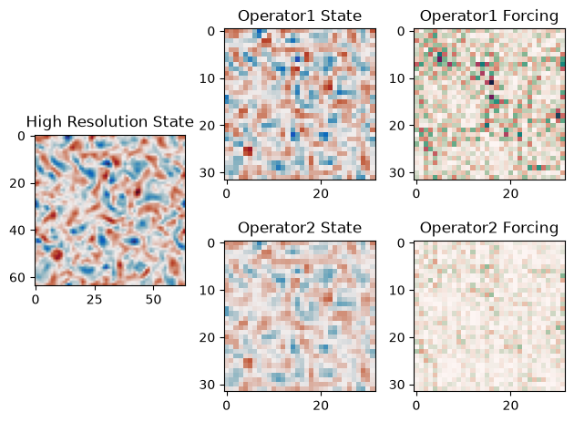

Coarsening States
In using this model to design subgrid parameterizations you will need to coarse grain and filter states from a ground truth high resolution simulation. Here we present implementations of “Operator 1” and “Operator 2” as described in “Benchmarking of Machine Learning Ocean Subgrid Parameterizations in an Idealized Model.” The original NumPy implementation of these operators is available on GitHub and Zenodo.
%env JAX_ENABLE_X64=True
import abc
import inspect
import functools
import matplotlib.pyplot as plt
import matplotlib.gridspec as gridspec
import cmocean.cm as cmo
import jax
import jax.numpy as jnp
import pyqg_jax
env: JAX_ENABLE_X64=True
In order to reduce the resolution of our base model we will want to
construct an identical copy while overriding its nx and ny
parameters. To do this we write a function to extract the constructor
arguments from an existing model object.
def model_to_args(model):
return {
arg: getattr(model, arg) for arg in inspect.signature(type(model)).parameters
}
With this function in place we can then replace the two resolution parameters with a smaller size to produce a coarsened copy of a large model.
def coarsen_model(big_model, small_nx):
if big_model.nx != big_model.ny:
raise ValueError("coarsening tested only for square shapes")
if small_nx >= big_model.nx:
raise ValueError(
f"coarsening output is not strictly smaller (got {big_model.nx} to {small_nx})"
)
if small_nx % 2 != 0:
raise ValueError(f"coarsening output should be even-valued, requested {small_nx}")
model_args = model_to_args(big_model)
model_args["nx"] = small_nx
model_args["ny"] = small_nx
return type(big_model)(**model_args)
We use this as a building block to create an abstract
SpectralCoarsener class. This class provides two methods:
coarsen_state which produces a state object with reduced resolution,
and compute_q_total_forcing which computes a subgrid forcing based
on the high resolution state input, an additive correction to the
low-resolution updates.
We also add methods which are used to decompose this object so that
subclasses can be registered as JAX PyTrees. Subclasses need only
define the property spectral_filter.
class SpectralCoarsener(abc.ABC):
def __init__(self, big_model, small_nx):
self.big_model = big_model
self.small_nx = small_nx
@property
def small_model(self):
return coarsen_model(self.big_model, self.small_nx)
@property
def ratio(self):
return self.big_model.nx / self.small_nx
def coarsen_state(self, state):
if jax.eval_shape(lambda s: s.q, state).shape != (
self.big_model.nz,
self.big_model.ny,
self.big_model.nx,
):
raise ValueError(f"incorrect input size {state.qh.shape}")
out_state = self.small_model.create_initial_state(jax.random.key(0))
nk = out_state.qh.shape[-2] // 2
trunc = jnp.concatenate(
[
state.qh[:, :nk, : nk + 1],
state.qh[:, -nk:, : nk + 1],
],
axis=-2,
)
filtered = trunc * self.spectral_filter / self.ratio**2
return out_state.update(qh=filtered)
def compute_q_total_forcing(self, state):
coarsened_deriv = self.coarsen_state(self.big_model.get_updates(state))
small_deriv = self.small_model.get_updates(self.coarsen_state(state))
return coarsened_deriv.q - small_deriv.q
@property
@abc.abstractmethod
def spectral_filter(self):
pass
def tree_flatten_with_keys(self):
return [(jax.tree_util.GetAttrKey("big_model"), self.big_model)], self.small_nx
@classmethod
def tree_unflatten(cls, aux_data, children):
return cls(big_model=children[0], small_nx=aux_data)
From the above base class we define two subclasses implementing our two sample coarsening and filtering operators.
@jax.tree_util.register_pytree_with_keys_class
class Operator1(SpectralCoarsener):
@property
def spectral_filter(self):
return self.small_model.filtr
@jax.tree_util.register_pytree_with_keys_class
class Operator2(SpectralCoarsener):
@property
def spectral_filter(self):
return jnp.exp(-self.small_model.wv**2 * (2*self.small_model.dx)**2 / 24)
Next, a of using these two operators to produce states of size 32 from high resolution states of size 64. We first roll out a trajectory at size 64, keeping only the last state.
LARGE_SIZE = 64
SMALL_SIZE = 32
base_model = pyqg_jax.qg_model.QGModel(
nx=LARGE_SIZE,
ny=LARGE_SIZE,
precision=pyqg_jax.state.Precision.DOUBLE,
)
model = pyqg_jax.steppers.SteppedModel(
model=base_model,
stepper=pyqg_jax.steppers.AB3Stepper(dt=14400.0),
)
@functools.partial(jax.jit, static_argnames=["num_steps"])
def roll_out_state(state, num_steps):
def loop_fn(carry, _x):
next_state = model.step_model(carry)
return next_state, None
final_state, _ = jax.lax.scan(
loop_fn, state, None, length=num_steps
)
return final_state
final_step = roll_out_state(
model.create_initial_state(jax.random.key(0)), num_steps=7500
)
Using the base model from above we construct our one of each of our
two operators. Because these have been registered as PyTrees they can
pass through JAX transformations, such as jax.jit just like the
arrays and model states.
op1 = Operator1(base_model, SMALL_SIZE)
op2 = Operator2(base_model, SMALL_SIZE)
@jax.jit
def compute_small(op, state):
return op.coarsen_state(state), op.compute_q_total_forcing(state)
We use our JIT-compiled function to produce smaller states and compute the associated forcing with each of the two operators.
big_state = final_step.state
op1_state, op1_forcing = compute_small(op1, big_state)
op2_state, op2_forcing = compute_small(op2, big_state)
Finally, we show the low-resolution states and forcing values next to the original high-resolution state.
q_vmax = max(jnp.abs(s.q[0]).max() for s in [big_state, op1_state, op2_state])
f_vmax = max(jnp.abs(f[0]).max() for f in [op1_forcing, op2_forcing])
fig = plt.figure(layout="tight")
gs = gridspec.GridSpec(2, 3)
# Plot large image
ax = fig.add_subplot(gs[:, 0])
ax.imshow(big_state.q[0], cmap=cmo.balance, vmin=-q_vmax, vmax=q_vmax)
ax.set_title("High Resolution State")
for i, (state, forcing) in enumerate(
[(op1_state, op1_forcing), (op2_state, op2_forcing)]
):
ax1 = fig.add_subplot(gs[i, 1])
ax1.imshow(state.q[0], cmap=cmo.balance, vmin=-q_vmax, vmax=q_vmax)
ax1.set_title(f"Operator{i + 1:d} State")
ax2 = fig.add_subplot(gs[i, 2])
ax2.imshow(forcing[0], cmap=cmo.curl, vmin=-f_vmax, vmax=f_vmax)
ax2.set_title(f"Operator{i + 1:d} Forcing")
